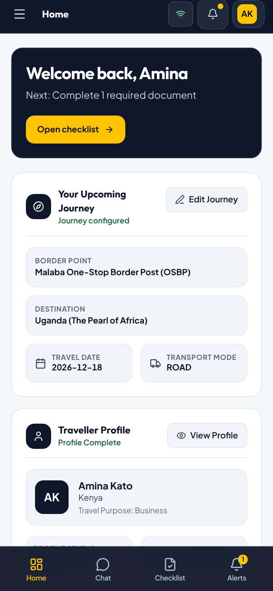
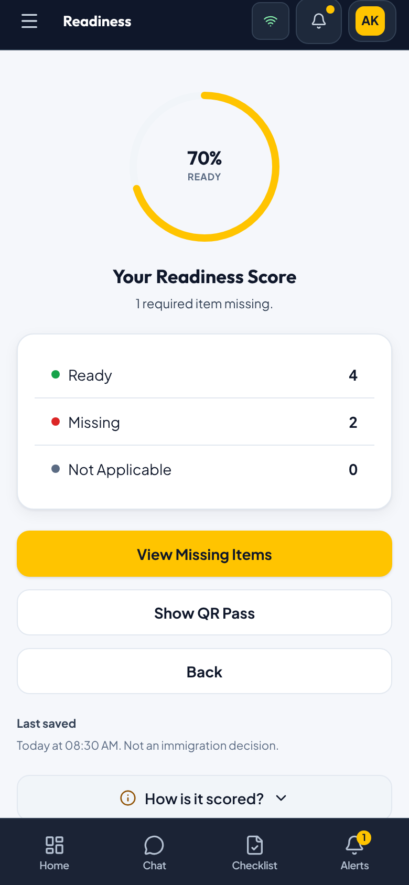
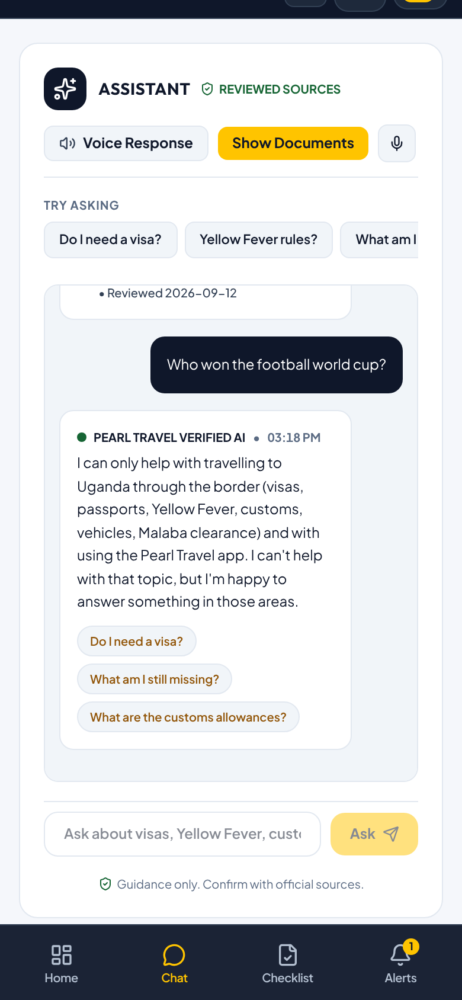
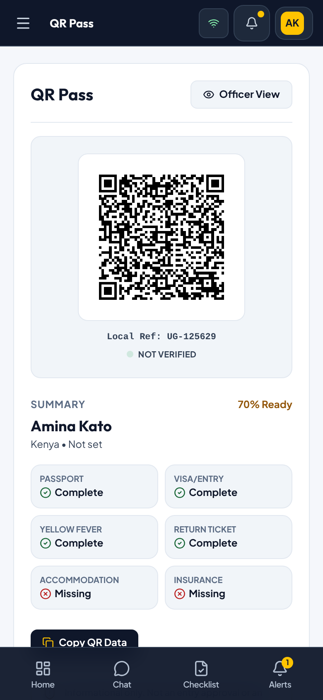
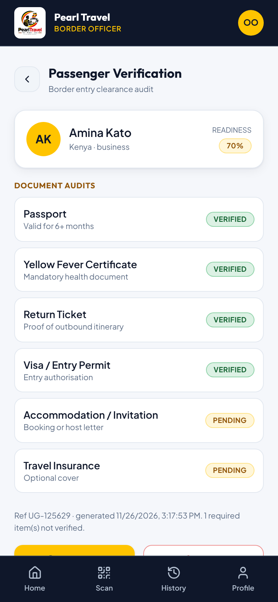

1Background
- Uganda offers e-Visa and e-immigration services, and East African One-Stop Border Posts clear both countries’ formalities in one place.
- Malaba (Uganda–Kenya) is one of the busiest Northern Corridor crossings: traders, students, patients and families.
- Official systems focus on applications and compliance, not on personal pre-arrival readiness.
- Entry information is spread across websites, notices, social media and informal “touts”. Border-town internet is often unreliable or costly.
2Problem
- Travellers may not find clear, personalised information for their nationality and purpose of travel.
- Online-only guidance fails when connectivity is weak.
- How big the problem is at Malaba has not yet been established, so the study investigates it instead of assuming it.
Research gap: no traveller-centred tool for Uganda’s land borders combines a personalised checklist, readiness score, offline access and grounded Q&A.
3Objectives
General: design, develop and evaluate Pearl Travel, a pre-arrival guidance and readiness prototype for travellers entering Uganda through Malaba OSBP.
Investigate travellers’ and officials’ information needs and preparation challenges.
Identify official requirements and organise them into a verified knowledge base.
Design the profiling model, rule engine and architecture.
Build a working prototype: checklist, readiness, offline, assistant, QR.
Evaluate rule correctness, answer quality, offline use, usability and acceptance.
4Scope
- Site: Malaba OSBP only; other borders are future work.
- People: adult inbound travellers and passenger-clearance officials.
- Purposes: tourism, business, study, medical, family visits, transit.
- Advisory only: no visas issued, no entry guarantee, no replacement of officers.
5Methods
Design Science Research (build and evaluate an artefact) with mixed-methods data collection. The study is formative.
Data collection and evaluation
| Method | Planned sample / measure |
|---|---|
| Traveller survey | 40 target (30 min.), convenience sample, needs and connectivity |
| Official interviews | 10 target (5 min.), purposive, thematic analysis |
| Usability sessions | 10 target (8 min.), task success, SUS and TAM |
| Document analysis | EAC OSBP Act 2016, DCIC and URA sources, each rule dated and versioned |
| Technical tests | Rule test profiles, assistant benchmark, offline (airplane-mode) tests |
Ethics: informed consent, anonymised officials, no passport numbers stored. Results are indicative only, not generalisable.
6Design
Conceptual framework
System architecture (designed) and what is built
Rule records carry the source, version, effective date and verifier. Unknown rules show a warning and refer the traveller to official channels.
7The prototype in use
Pick nationality and purpose
Get your checklist
See your readiness score
Show your QR pass






8Current implementation status
| Component | Status |
|---|---|
| Accounts and profile | Done |
| Rule engine by nationality | Done |
| Checklist and readiness score | Done |
| Malaba guide and videos | Done |
| Assistant (keyword KB, no LLM) | Partial |
| QR pass (unsigned, shows name) | Partial |
| Offline use (data on device only) | Partial |
| Officer and admin modules | Partial |
| Web app, not React Native | Changed |
| Rules by travel purpose | Planned |
| User evaluation (survey, SUS, TAM) | Planned |
Partial: the assistant matches keywords in a curated knowledge base instead of using a language model; the QR pass is advisory but not yet a signed, anonymous token; there is no offline app shell yet; officer and admin data is kept in the browser. Google sign-in works once a client ID is set. Built with React 19, Vite, Node.js and PostgreSQL.
9Results so far
Assistant benchmark (unseen questions)
Method: expected answers fixed before testing. A first 39-question run scored 34/39 (87%) and exposed 5 defects, all fixed. The 27 unseen questions above were then run once and not tuned. Weak spots: paraphrases and unsupported questions, which motivates semantic (RAG) retrieval.
Personalised requirements (36 test profiles)
| Group | Visa rule shown | Reqs |
|---|---|---|
| Citizen | Citizen entry, no visa | 7 |
| EAC (Kenya, Rwanda) | Free movement | 8 |
| Other (US, India, Eritrea) | e-Visa mandatory | 8 |
6 nationalities × 6 purposes gave 3 distinct rule sets with identical output for identical input (deterministic). Purpose-specific rules are not built yet.
Not yet available: traveller survey, official interviews and SUS/TAM usability results. They are planned and will be reported descriptively.
10Expected impact and limits
- Expected: travellers who know what to bring and which steps follow, with sources shown for every rule.
- Not claimed: shorter queues or faster processing. That needs a separate impact study.
- Limits: small samples at one site; rules reflect the verification date; prototype not deployed.
- Next: signed no-personal-data QR, LLM-RAG assistant, offline app shell, other borders, Swahili interface, official integration.
Key references: Hevner et al. (2004) MIS Quarterly; Peffers et al. (2007) JMIS; Davis (1989) MIS Quarterly; Brooke (1996) SUS; Lewis et al. (2020) RAG; East African Community (2016) One Stop Border Posts Act; Parliament of Uganda (2019) Data Protection and Privacy Act.